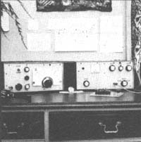
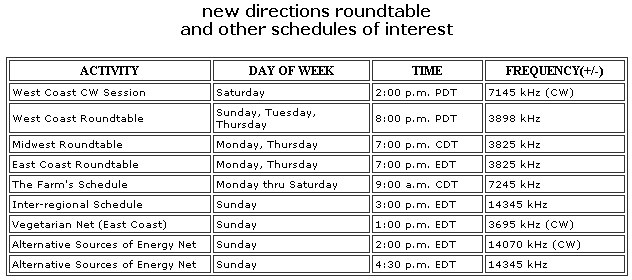

New Directions Radio
A bit on low-cost ham radio equipment.
By Copthorne Macdonald
September/October 1976
Copthorne Macdonald is the inventor of slow-scan television ... a method of amateur radio transmission that allows ham operators to both hear and see each other during shortwave broadcasts.
MORE ON SIMPLE GEAR
Paul Doerr mentioned the need for simple, low-cost ham radio equipment in MOTHER NO. 38, and I devoted a few hundred words to the subject here last time. Now I'm finding out that MOTHER readers have been working on the problem all along.
Martin Sample (WN6JTD), 2206-B Jefferson St., Berkeley, Calif. 94703, built the very neat station shown in the accompanying photo. While Martin did use a modular approach, he didn't put each of his modules in its own separate cabinet. Instead, he chose a single large, roomy aluminum box measuring 5-3/4" X 8" X 12" to house all the circuit board modules.
The unit pictured on the left contains the modules, while the one on the right houses Martin's transmitter amplifier. The receiver is of the simple direct-conversion type. This design approach allows a single variable-frequency oscillator (VFO) module to control both the receive and transmit frequencies. Thus, Martin's "bare mini mum" receiver requires only this VFO module-plus a "detector/audio preamp" circuit board-to produce enough audio output to allow one to listen to single sideband (SSB) and code (CW) signals with a headphone.
For better separation of CW signals Martin built a "CW filter" module, and to get loudspeaker volume he added an "audio output" board. These additional subassemblies fit right in the receiver cabinet, but of course they aren't needed if all you want to do is start listening on 'phones.
Sample's CW transmitter is simply a tube-type RF amplifier that boosts the output of the VFO module and keys it on and off. Transmitter output is about 45 watts, and the whole shebang is designed for 40-meter operation.
Incidentally, Martin powers his receiver with a 12-volt lantern battery, which he says has lasted for a year so far.
In true ham style, Sample is already planning the next version of his rig. "Now that I've got working modules for my receiver," he explains, "I'm thinking of making them smaller, adding a 2- to 10-watt transistor amp, and putting them all in one of those little metal boxes that the stationery store sells. Then I'd have a transceiver which is portable, and which-at home-would drive my power amplifier."
It's clear, then, that we're off to a good start on The Receiver Project. Martin Sample's work in this direction is very encouraging. By the way, I finished my own stab at a "simple receiver" about a week ago and gave the set to a young friend to use. And naturally 1, too, am already tinkering with a New Improved model. As soon as we've compared notes on our successes and failures, and refined our various approaches, we'll find some way to get detailed construction info to those who want it.
I should mention that in the past few years several articles on directconversion receivers and simple transmitters have appeared in the ham magazines. Check your library's back-issue file. Perhaps we can build on this past experience and come up with some basic ham radio gear that's a little simpler, less expensive, and better matched to our purposes than anything currently available.
NDR NEWS
A New Directions Roundtable session on FM radio? Yep, it's really happening. Listener-sponsored station KBOO in Portland, Oregon became interested in our New Directions activities and-as I write this-is about to carry one of the West Coast Roundtable sessions live. Congratulations to Randy Brink (WA7BKR), who made the arrangements.
Randy and several other hams-including Joe Ciskowski (WN7BMX), who trekked all the way from Bonners Ferry, Idaho-attended The 4th Regional Communications Conference in Eugene, Oregon. Randy presided at the ham radio workshop, while Willie Pound (WB7DRP) set up an operating ham station that drew visits by a good many conference attendees.
Tom Le-Vell (Box 446, Lakehead, Calif. 96051) writes that he organized a ham radio class open to anyone in northern California which-last spring-was going strong at Shasta College. Write to Tom or call him at (916) 238-2713 with regard to plans for a fall session.
Inter-Regional Schedule fans, take note: Our Sunday 20-meter SSB sessions have moved from 14253 to 14345 kHz to allow General Class hams to participate ... finally. (Better late than never!)
GOT A MINUTE?
As you probably already know, it's now possible to make a one-minute telephone call and be charged for only the one minute, not three (as in the past). This prompts Randy Brink to suggest that a quickie phone call is one fairly low-cost way to see whether or not a ham friend can get on the air for a longer chat.
Another use of the one-minute call that hams ought to be aware of is CQ magazine's Dial-A-Prop radio propagation forecast service. Simply dial (516) 883-6223-a New York number, in case you're wondering-and you'll hear a one-week forecast of propagation conditions. The entire message actually lasts about two minutes, but the most important information is given first.
SHORTWAVE BOOKS
Two books which should interest the more serious and well-equipped shortwave listener have been brought to my attention. One is the World Radio TV Handbook and the other is the Confidential Frequency List. Both are published by Gilfer Associates, Inc.
The World Radio TV Handbook contains over 500 pages of detailed information about shortwave broadcast stations in all parts of the world. Included are frequencies, times of operation, some program schedules, even the musical signatures by which certain stations identify themselves. Also, the volume contains articles on shortwave listening techniques, antennas, and propagation forecasting ... plus technical reviews of shortwave receivers. A new edition of the Handbook appears each year in March, and the current edition is priced at $10.95 postpaid (although if you order after August 15, the price is only $8.95).
The Confidential Frequency List contains an amazing 80 pages of nonbroadcast, non-amateur station frequencies. "What else is there?" you ask. Well, for starters try Coast Guard stations, embassies, press teletype transmissions, RTTY and facsimile weather transmissions, Interpol, and even the Mounties. Many of the stations listed send only CW or RTTY, so this book-like the World Radio TV Handbook - is intended primarily for the more sophisticated shortwave listener. Its price, postpaid: $5.45.
Order either (or both) of the above books from Gilfer Associates, Inc., P.O. Box 239, Park Ridge, N.J. 07656.
Peace,
Cop Macdonald (VE1BFL)
99 Fitzroy St.
Charlottetown
Prince Edward Island
Canada
 |
 |
 |